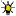

Vereina Tunnel
Useful Information
| Location: |
Bahnhofstrasse 2, 7250 Klosters
(46.761917, 10.093056) |
| Open: |
DEC to APR daily 5:20-00:20. MAY to NOV 5:20-21:20. [2026] |
| Fee: |
Summer:
Car CHF 36, Minibus CHF 54, Trailer CHF 22. Winter: Car CHF 39, Minibus CHF 84, Trailer CHF 22. [2026] |
| Classification: | Tunnel |
| Light: |
 Electric Light |
| Dimension: | L=19,048 m, A=1,179 m asl (Klosters), 1,426 m asl (Susch). |
| Guided tours: | n/a |
| Photography: | allowed |
| Accessibility: | yes |
| Bibliography: | |
| Address: |
Rhätische Bahn AG, Autoverlad Vereina, Bahnhofstrasse 2, 7250 Klosters, Tel: +41-81-288-37-24.
E-mail: |
| As far as we know this information was accurate when it was published (see years in brackets), but may have changed since then. Please check rates and details directly with the companies in question if you need more recent info. |
|
History
Description
The Vereina Tunnel is one of the most important north-south connections through Switzerland. It connects the north through the Upper Rhine Valley and the Prättigau with the Unterengadin (Engadina Bassa, Lower Engadin). It thus passes under the Flüelapass (2,383 m asl) more than 1,000 m below.
This is not really a good connection if you plan to drive to the south to Italy. The lower Engadin is a secluded valley in the middle of the Alps. It is hard to get anywhere from here, at least not fast, but there are roads into Vorarlberg in Austria and the Trentino in Italy, and also to St. Moritz in Switzerland. All those roads are winding mountain road, several of them leading to passes. So the use of the tunnel is to bring tourists from the north fast to the important holiday destinations in the central Alps.
The Vereina Tunnel is a railroad tunnel, still it is primarily a connection for cars. The cars are carried through the tunnel by train, similar to a ferry. To use the tunnel you drive to the train station at Klosters or Sagilains, pay your ticket and wait for the next train. They are scheduled really frequent and so soon you enter the train, stay in your car through the tunnel, and drive out of the train on the other side. The tunnel seems to have its season in winter, which is obviously due to winter sports, the Engadin has famous skiing areas. So the train is open longer and fee is higher in Winter. The train actually drives back and forth all the time, the tunnel is a single line tunnel.